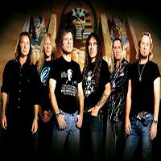
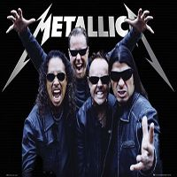
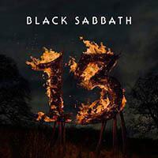

<article class="noticias redondeado">
        <section class="main">
            <ul>
                
                <li>Iron Maiden. 2.103.522 oyentes.</li>
                <li>Fundada en 1975.</li>
                <li>Origen, Inglaterra, Reino Unido.</li>
                <li>Miembros: Steve Harris,Bruce Dickinson,Dave Murray,Adrian Smith,Nicko McBrain,Janick Gers</li>
                <hr>
                
                <li>Metallica. 2.893.779 oyentes.</li>
                <li>Fundada en 1981</li>
                <li>Origen, Los Ángeles, California,Estados Unidos</li>
                <li>Miembros: Lars Ulrich,James HetfieldKirk,Hammett,Robert Trujillo</li>
                <hr>
                
                <li>Black Sabbath. 2.442.596 oyentes.</li>
                <li>Fundada en 1968.</li>
                <li>Origen:Birmingham, Inglaterra, Reino Unido</li>
                <li>Miembros: La banda conto con mas de 25 miembros entre ellos los mas conocidos son:Ian Gillan,Ray
                    Gillen,Cozy Powell,Eric Singer</li>
                <hr>
            </ul>
        </section>
</article>